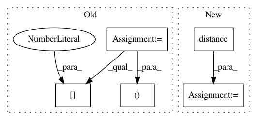

25e57a1d525fffe215b6226f9206d1f51cbc5e58,hypergan/discriminators/autoencoder_discriminator.py,AutoencoderDiscriminator,build,#AutoencoderDiscriminator#Any#,19
Before Change
ops = self.ops
print("ERROR PRE IS ", net)
x, g = self.split_batch(net)
print("xg PRE IS ", x, g)
hidden = PyramidDiscriminator.build(self, net)
reconstruction = gan.generator.build(hidden) //reuse?
rx, rg = self.split_batch(reconstruction)
self.rx = rx
self.rg = rg
error = tf.concat([config.distance(x, rx), config.distance(g,rg)], axis=0)
print("ERROR IS ", error)
error = tf.reshape(error, [ops.shape(error)[0], -1])
//error = tf.concat([error]+mini, axis=1) TODO minibatch
return error
After Change
hidden = PyramidDiscriminator.build(self, net)
reconstruction = gan.generator.build(hidden) //reuse?
error = config.distance(net, reconstruction)
//error = tf.reshape(error, [ops.shape(error)[0], -1])
//error = tf.concat([error]+mini, axis=1) TODO minibatch
In pattern: SUPERPATTERN
Frequency: 3
Non-data size: 5
Instances
Project Name: HyperGAN/HyperGAN
Commit Name: 25e57a1d525fffe215b6226f9206d1f51cbc5e58
Time: 2017-06-08
Author: martyn@255bits.com
File Name: hypergan/discriminators/autoencoder_discriminator.py
Class Name: AutoencoderDiscriminator
Method Name: build
Project Name: gboeing/osmnx
Commit Name: fe8f96e9981376e26984bfa4812916d14856dc05
Time: 2020-11-18
Author: boeing@usc.edu
File Name: osmnx/distance.py
Class Name:
Method Name: get_nearest_edge
Project Name: gboeing/osmnx
Commit Name: c46a77985576103fc92ac95395f4d8410f56f029
Time: 2020-12-02
Author: boeing@usc.edu
File Name: osmnx/distance.py
Class Name:
Method Name: get_nearest_edge